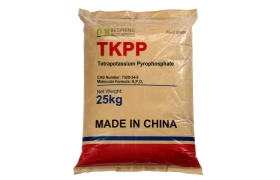

الحجز والتحكم في العملية
يمكن أن يربط TKPP بعض الأيونات المعدنية ويدعم التحكم في العملية في أنظمة الغذاء حيث تؤثر التفاعلات المعدنية على الثبات والمظهر أو أداء المعدات.
- حبس أيونات المعادن
- دعم أداء مزيج الفوسفاط.
- تعديل القلوية والتركيبة
فوسفات الغذاء · ملح البوتاسيوم · INS 450(v)
TKPP هو فوسفات قلوي قابل للذوبان في الماء بشكل عالٍ يستخدم في صيغ غذائية مختارة للاستحلاب، والحجز، ودعم القوام، والتحكم في العمليات. توفر Bespring TKPP بدرجة غذائية للمشترين الصناعيين الدوليين.
يجب تضمين الكمية، والوجهة، والتطبيق، والمستندات المطلوبة للامتثال للحصول على عرض مفيد.

نظرة عامة على المنتج
رباعي فوسفات البوتاسيوم (TKPP)، المعروف أيضًا باسم رباعي فوسفات ثنائي البوتاسيوم أو فوسفات البوتاسيوم، هو ملح البوتاسيوم لحمض ثنائي الفوسفوريك. صيغته الكيميائية هي K4P2O7، رقم CAS الخاص بها هو 7320-34-5، وتصنيفها الدولي للمضافات الغذائية هو INS 450(v).
TKPP مادة تمتص الرطوبة وقابلة للذوبان بشكل كبير في الماء. يجمع بين القلوية ووظيفة الفوسفات وربط أيونات المعادن، مما يجعله مفيدًا في أنظمة معالجة الطعام المصممة بعناية. يجب تحديد الجرعة المناسبة والاستخدام القانوني وفقًا لفئة الطعام المحددة والسوق المستهدف.
الأدوار الوظيفية
يمكن أن يقوم TKPP بعدة وظائف في التركيبة. الأداء الفعلي يعتمد على نظام الفوسفات الكامل والمواد الخام وظروف العملية والجرعة وخصائص المنتج المستهدف.
يمكن أن يربط TKPP بعض الأيونات المعدنية ويدعم التحكم في العملية في أنظمة الغذاء حيث تؤثر التفاعلات المعدنية على الثبات والمظهر أو أداء المعدات.
في أنظمة البروتين والنشا ومنتجات الألبان المناسبة، قد يساهم TKPP في الاستحلاب، إدارة الماء، العائد ونسيج المنتج النهائي.
استخدامات صناعة الأغذية
هذه هي نقاط البداية للتشكيلات وليست ادعاءات استخدام عامة. يجب على المشترين التحقق من الملاءمة التقنية ومستوى الاستخدام المسموح ومتطلبات الملصقات.
يُستخدم في أنظمة الفوسفات المختارة للحوم المفرومة والسجق الهام لدعم احتباس الماء والعائد والقوام.
قد يُدمج مع فوسفات مركزة أخرى للتحكم في المعادن وتحقيق أهداف الجودة في معالجة المنتجات المائية.
يمكن أن يدعم الفوسفات القلوي وظيفة النسيج، وتحمل المعالجة والعائد في تركيبات المعكرونة المناسبة.
يُستخدم في أنظمة المثبتات والمستحلبات المختارة حيث يتم تحسين الفراغ والاتساق وأداء العمليات.
قد تدعم وظائف الحجز والاستحلاب إدارة المعادن والبروتينات في تطبيقات الألبان المناسبة.
قد يتم تقييمه في أنظمة الفوسفات الخاضعة للرقابة بعناية والمعدة لدعم المعالجة ومظهر المنتج.
معلومات تقنية
القيم التالية تعكس ورقة مواصفات Bespring المقدمة للمراجعة الأولية لعمليات الشراء. وهي ليست شهادة تحليلات دفعة أو تصريحًا بالامتثال لكل الموسوعات الدولية. يرجى تأكيد المواصفة والتقنيات الحالية الموقعة قبل الطلب.
| عنصر الاختبار | وحدة | المواصفة |
|---|---|---|
| محتوى K₄P₂O₇ | % | ≥ 95.0 |
| مادة غير قابلة للذوبان في الماء | % | ≤ 0.2 |
| زرنيخ (As) | % | ≤ 0.0003 (3 ملغم/كغم) |
| المعادن الثقيلة (كمقدار Pb) | % | ≤ 0.001 (10 ملغم/كغم) |
| الرصاص (Pb) | % | ≤ 0.0002 (2 ملغم / كغم) |
| الفلوريد (F) | % | ≤ 0.003 (30 ملغم/كغم) |
| الفقدان عند الاشتعال عند 110°م | % | ≤ 0.5 |
| الكادميوم (Cd) | % | ≤ 0.0001 (1 ملغم / كغم) |
| الزئبق (Hg) | % | ≤ 0.0001 (1 ملغم / كغم) |
| المظهر | — | مسحوق أو حبيبات بيضاء |
ملاحظة المواصفة: قد تختلف الحدود الدوائية وحدود السوق المستهدفة عن هذا المواصفات التجارية. قارن دائمًا الدرجة المقدمة وشهادة تحليل الدُفعة الخاصة بك مع عقدك، الغرض المقصود من التطبيق، واللوائح المحلية.
دعم التأهيل
الشهادات ووثائق نظام الإدارة محددة بالوقت. اطلب نسخًا حالية وقابلة للتطبيق وتأكد من اسم المنتج والموقع والنطاق والجهة المصدرة وتواريخ الصلاحية أثناء اعتماد المورد.
المواصفة الحالية، ورقة البيانات التقنية، ورقة بيانات السلامة وشهادة تحليل تمثيلية أو خاصة بالدُفعة.
طلب مستندات HACCP، كوشير وحلال المنطبقة على المنتج المعروض وموقع الإنتاج أو التغليف.
طلب شهادة ISO الحالية ونطاقها، جنبًا إلى جنب مع استبيانات التتبع أو الجودة المطلوبة في عملية الموافقة الخاصة بكم.
التخزين والمناولة
أسئلة المشتري
يُستخدم TKPP في تركيبات مختارة كمستحلب، ومثبت، ومحسّن للملمس، وفوسفات قلوي. تشمل التطبيقات المحتملة اللحوم المصنعة والمأكولات البحرية والنودلز وأنظمة الألبان والحلويات المجمدة والأطعمة المعلبة، وذلك حسب التجارب واللوائح المحلية.
نعم. فوسفات البوتاسيوم الرباعي، ثنائي فوسفات البوتاسيوم الرباعي، وفوسفات البوتاسيوم هي أسماء شائعة الاستخدام لـ K₄P₂O₇، رقم CAS 7320-34-5 وINS 450(v).
الكمية الدنيا المرجعية للطلب هي 500 كجم. التعبئة القياسية هي 25 كجم لكل كيس، مع كمية تحميل مرجعية تبلغ 20 طن متري لكل حاوية بطول 20 قدماً. يرجى تأكيد التفاصيل الحالية للبالات، البطانة، الوسم والتحميل في عرض السعر.
نعم. اطلب النسخ الحالية التي تنطبق على العرض المقدم. يجب على فريق التأهيل الخاص بك التحقق من نطاق كل مستند، وموقع الإنتاج أو التعبئة، والجهة الصادرة عنه وفترة صلاحيته.
يمكن ترتيب العينات للمشاريع المؤهلة. يرجى تقديم تطبيقك، والمواصفة المستهدفة، والوجهة، وتفاصيل البريد السريع. يجب مراجعة شهادة تحليل دفعة مقابل مواصفة الشراء المتفق عليها بشكل متبادل.
يرجى تزويدنا بالكمية، والمواصفات المطلوبة أو المجمع، والتطبيق، ومتطلبات التعبئة والتكديس على المنصات، وميناء الوجهة، ومستندات الامتثال، وتاريخ التسليم المستهدف.
بدء محادثة توريد
شارك التفاصيل التي تؤثر على الملاءمة الفنية، التوثيق والتكلفة عند الوصول. يمكن لفريقنا بعد ذلك إعداد رد تجاري مناسب.